Validations expérimentales du procédé
En parallèle de l'approche théorique reposant sur une modélisation numérique des phénomènes d'évapo-condensation, une unité pré-industrielle a été conçue et réalisée.
Cette unité pré-industrielle a trois principaux objectifs. Elle doit permettre :
- D'alimenter en données le modèle numérique du chapitre 2 afin de le caler au mieux, de vérifier et de valider l'écart entre le modèle et la réalité expérimentale.
- De mesurer les températures extérieures du réacteur et de les comparer avec les températures internes du fluide afin de modéliser les déformations potentielles du réacteur et par conséquent d'en valider la géométrie.
- De valider le nouveau principe d'une configuration dite DLD (pour Digestion – Lyse – Digestion). Il s'agit d'exploiter l'unité afin de s'assurer que tous les paramètres de l'hydrolyse et de la digestion soient convenables et finalement que le bilan global du procédé d'hydrolyse et de la configuration DLD correspondent bien à ce qui est attendu.
3.1 Présentation de l'unité pré-industrielle
L'unité pré-industrielle est conçue de manière à être totalement autonome de la station d'épuration sur laquelle elle se trouve. Les seules interactions qui ont lieu entre l'unité et l'usine sont les échanges de fluides et gaz. Une quantité de boue primaire et de boue biologique sont extraites séparément avant d'être mélangées afin de maintenir leur proportion respective constante dans le mélange quelle que soit la production de boue de l'usine. Le biogaz produit par l'unité est réinjecté dans le gazomètre de l'usine après analyse en ligne. À noter aussi une utilisation d'eau potable pour le générateur vapeur ainsi qu'une consommation d'eau industrielle pour assurer la dilution de la boue hydrolysée avant son injection dans le digesteur.
L'unité pré-industrielle présentée à la figure 3.1 a la capacité de traiter les boues produites par une station d'épuration de 15 000 personnes (ou encore équivalent habitant).
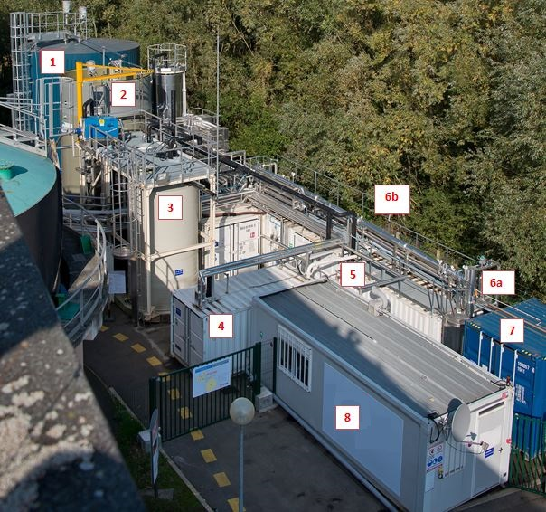
Cette unité de recherche pré-industrielle est composée de :
- Deux digesteurs, respectivement de 150 m³ en [1] et de 50 m³ en [2], présentés figure 3.1,
- 2 stockeurs de boue de 20 m³ en [3], présentés figure 3.1,
- D'une centrifugeuse en [4a] et son atelier de préparation polymère en [4b], présentés figure 3.3,
- D'une trémie tampon de 4 m³ en [5], figure 3.1,
- De la partie verticale du procédé d'hydrolyse thermique servant de condenseur en [6a], figure 3.1,
- De la partie horizontale du procédé servant de réacteur également présentée en [6b], figures 3.1 et 3.2,
- D'un échangeur de refroidissement en [6c], situé en sortie du réacteur [6b], ainsi que d'un point d'ajout d'eau industrielle de dilution en [6d] amont échangeur, figure 3.2,
- En [7], d'un générateur vapeur électrique permettant de produire de la vapeur à 13 bar pour la réaction d'hydrolyse, figure 3.1,
- En [8], d'un laboratoire regroupant la supervision ainsi que les équipements d'analyse, figure 3.1.
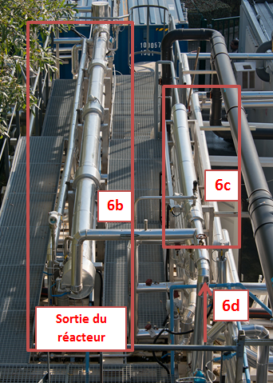
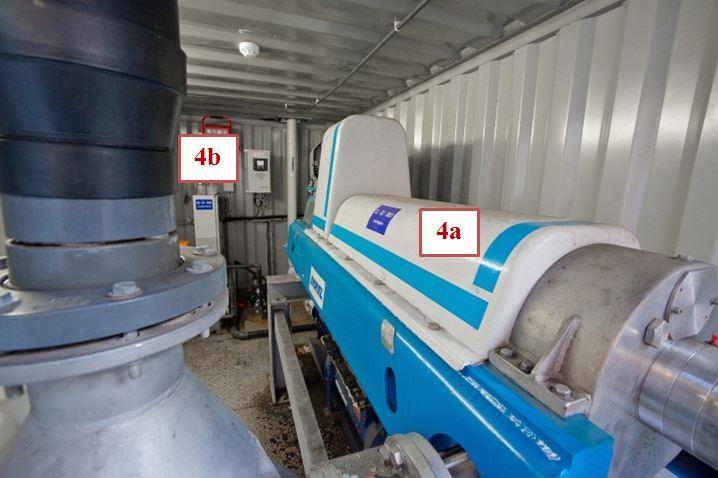
Le fonctionnement de l'unité dans la configuration DLD est le suivant. Des boues primaire et biologique sont reçues de la station d'épuration et sont injectées dans un premier stockeur [3]. Les boues sont recirculées dans le stockeur de manière à homogénéiser le mélange. Le mixte de boue est alors envoyé dans un premier étage de digestion [1] pour une durée de 15 jours. Cette étape permet de digérer une grande partie de la matière organique. La boue digérée est ensuite épaissie par une centrifugeuse [4] à 23 % de siccité, soit 230 g/l de matière sèche, avant d'être hydrolysée. La boue épaissie arrive dans une trémie tampon [5] qui vient alimenter le procédé d'hydrolyse thermique. La boue est injectée dans la partie verticale du réacteur [6a], servant de condenseur, où elle va être mise en contact avec la vapeur vive. La seconde partie du réacteur [6b] assure le temps de contact pour la réaction d'hydrolyse. Une fois hydrolysée, la boue est diluée à l'eau industrielle [6d] pour ajuster sa concentration de matière en suspension à 100–120 g/l, soit 10–12 % de siccité afin de pouvoir maintenir le brassage dans le second digesteur et de s'assurer que la concentration en ammoniac n'inhibe pas la réaction de méthanogénèse. La boue diluée est aussi refroidie par un échangeur [6c] à 40 °C correspondant à la température de fonctionnement du second digesteur [2]. La boue est digérée une seconde fois pendant 15 jours avant d'être renvoyée dans le second stockeur [3] en vue de sa ré-injection dans le cycle de traitement de la boue de l'usine.
3.1.1 Dimensionnement de l'installation expérimentale
Le tableau 3.1 récapitule le dimensionnement des ouvrages précédemment cités. Il indique également les charges et débits à maintenir pour la configuration étudiée. Les valeurs présentées sont celles calculées par le constructeur de l'unité. Ce travail se concentre sur l'intérêt de la configuration DLD, cependant, l'unité est conçue pour pouvoir étudier les configurations LD et DL au besoin.
Tous les équipements et les configurations sont prévus pour recevoir les débits hydrauliques et les charges en matière sèche en continu. Toutes les installations doivent fonctionner en continu, sans arrêt pouvant perturber la biologie des digesteurs, pour arriver à une stabilisation du procédé permettant de conclure à la pertinence ou non de la configuration étudiée. Le dimensionnement est initialement prévu en considérant une siccité en sortie de centrifugeuse de 23 %. Lors des expérimentations la boue sera déshydratée à 28 % de siccité ce qui aura un impact sur l'ensemble de l'unité. L'augmentation de la siccité des boues diminuera la masse de boue à hydrolyser ce qui nécessitera d'augmenter le débit en entrée du premier digesteur pour maintenir un fonctionnement global continu de l'installation. Ce faisant les temps de séjour hydrauliques des digesteurs seront réduits par rapport à ceux initialement prévus.
| Mode de fonctionnement | Configuration DL | Configuration DLD | Configuration LD | |||
|---|---|---|---|---|---|---|
| D1 = DL | D2 = Référence | D1 – L – D2 | D1 = Référence | D2 = LD | ||
| Débit d'alimentation (kg MS/j) | 400 | 125 | 350 | 375 | 300 | |
| Débit d'alimentation (m³/j) | 8 | 2,5 | 7 | 7,5 | 6 | |
| Digesteur 1 | Volume (m³) | 150 | — | 105 | 150 | — |
| Temps de séjour hydraulique (jours) | 15 | — | 15 | 20 | — | |
| Temps de séjour des solides (jours) | 35 | — | 15 | 20 | — | |
| Débit d'alimentation (l/h) | 420 | — | 300 | 315 | — | |
| Production de biogaz (Nm³/j) | 104 | — | 100 | 75 | — | |
| Digesteur 2 | Volume (m³) | — | 50 | 40 | — | 50 |
| Temps de séjour hydraulique (jours) | — | 20 | 15 | — | 15 | |
| Eau de dilution (m³/j) | — | — | 0,4 | — | 0,8 | |
| Débit d'alimentation (l/h) | — | 105 | 90 | — | 140 | |
| Production de biogaz (Nm³/j) | — | 25 | 55 | — | 110 | |
| Procédé d'hydrolyse | Diamètre | DN 100 | — | DN 100 | — | DN 100 |
| Débit d'alimentation (l/h) | 55 | — | 50 | — | 66 | |
| Vitesse (mm/s) | 2,95 | — | 2,4 | — | 3,60 | |
| Longueur (m) | 10 | — | 10 | — | 10 | |
| Temps de séjour (min) | 57 | — | 71 | — | 46 | |
| Débit de vapeur (kg/h) | 35 | — | 30 | — | 40 | |
| Température de refroidissement (°C) | 165 | — | 55 | — | 56 | |
| Déshydratation | Consommation de polymère (kg m.a./j) | 3,5 | 2,8 | 3,0 | ||
| Retours à la STEP | Boue digérée (m³/j) | 4,4 | 2 | 4,4 | ||
| Centrats (m³/j) | 3,5 | 5,9 | 4,4 | |||
3.1.2 Les différentes configurations incluant une hydrolyse thermique
Les procédés d'hydrolyse thermique sont en principe placés en amont d'un digesteur. La voie d'utilisation classique est donc une configuration LD. Cependant, d'autres configurations sont envisagées.
La configuration LD (Lyse – Digestion) :
L'hydrolyse thermique est réalisée sur tout ou partie du flux de boues avant digestion. Dans cette configuration, exposée à la figure 3.4, les boues peuvent entrer deux fois plus concentrées dans le digesteur d'où un volume d'ouvrage divisé par deux. De plus, l'hydrolyse permet de réduire la quantité de boues et de garantir leur hygiénisation tout en augmentant la production de biogaz. Il est donc possible de soulager un digesteur saturé et de doubler sa capacité de traitement. L'installation d'un digesteur supplémentaire peut ainsi être évitée. Cette configuration est la plus courante et compte de nombreuses réalisations industrielles.
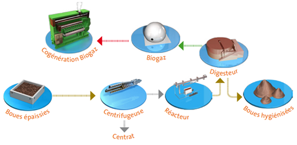
La configuration DLD (Digestion – Lyse – Digestion) :
L'hydrolyse thermique est réalisée sur la totalité des boues digérées provenant d'un premier digesteur. Une fois hydrolysées les boues sont diluées et refroidies avant de poursuivre leur dégradation dans un second digesteur.
Cette configuration, présentée figure 3.5, est censée être optimale en termes d'énergie car elle consomme moins de vapeur tout en réduisant davantage le volume des boues, en produisant du biogaz en proportion valorisable via une cogénération en électricité. Elle devrait permettre également une réduction maximale des quantités de boues à évacuer.
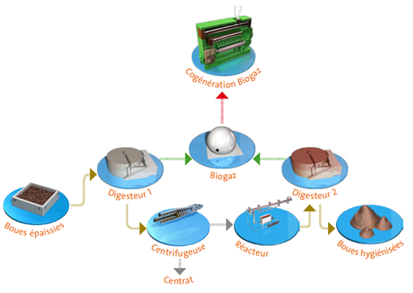
La configuration DL (Digestion – Lyse) :
Cette configuration exposée figure 3.6 s'approche d'une configuration DLD dégradée. Le réacteur d'hydrolyse est installé sur une boucle de recirculation des boues associée à un digesteur unique. L'hydrolyse thermique est appliquée à une partie des boues digérées. Cette configuration est censée conférer à l'opérateur une grande flexibilité d'utilisation, lui permettant d'ajuster la capacité de digestion selon les besoins, en utilisant une hydrolyse de taille réduite. La capacité de digestion d'une installation existante peut être augmentée jusqu'à 30 %.
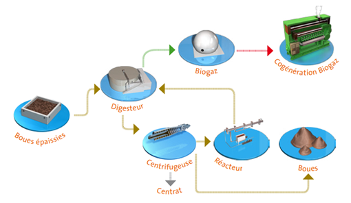
Avantages et désavantages de chacune des configurations :
Chacune de ces configurations présente des avantages et des désavantages. En plus de ces configurations standards, il est possible d'envisager des configurations dites « lyse partielle » consistant à ne lyser que les boues biologiques qui présentent un faible pouvoir méthanogène. Les boues primaires se digérant naturellement très bien.
Pour récapituler les avantages et désavantages de chacune des configurations, il est nécessaire de les comparer selon des critères quantitatifs (production électrique, volume des boues final, taille des digesteurs, taille de l'atelier de déshydratation, consommation de polymère, taille du réacteur d'hydrolyse) et des critères qualitatifs (hygiénisation et place disponible sur site).
À titre d'illustration, considérons une station d'épuration produisant 100 tonnes de matières sèches par jour. 60 % de ces boues étant des boues primaires (ayant 75 % de matière volatile) et 40 % étant donc des boues biologiques (ayant 73 % de matière volatile). La température de l'eau et des boues est considérée à 12 °C.
La pré-déshydratation des boues avant l'hydrolyse ainsi que la siccité finale des boues et la consommation polymère sont définies selon les caractéristiques des boues.
La figure 3.7 présente le bilan simplifié d'un digesteur. En considérant une quantité de boue de 100 tMS/jour à 5 % de siccité, soit 2 000 t de boue humide, un temps de séjour dans le digesteur de 20 jours et un rendement d'abattement des matières volatiles de 50 %, nous arrivons à un digesteur de 40 000 m³ produisant 28 300 Nm³/jour de biogaz et permettant de sortir des boues à 25 % de siccité (soit 60,5 tMS/jour et 242 t de boue humide/jour).
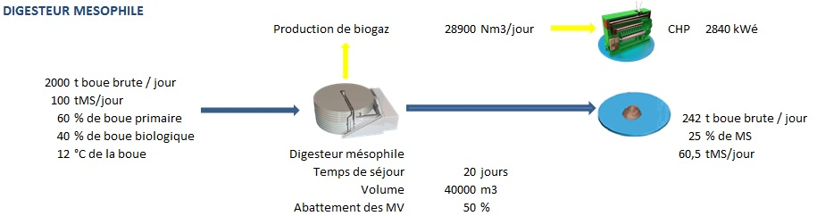
Le bilan 3.8 reprend la même quantité de boue mais dans une configuration LD. Du fait de la lyse thermique, le temps de séjour dans le digesteur peut être réduit à 15 jours ce qui réduit la taille du digesteur qui passe à 15 000 m³. L'abattement des matières volatiles est aussi amélioré par la lyse et passe à 59 %. La siccité finale est aussi améliorée et peut atteindre 32 %. Ainsi, la production de biogaz augmente et le volume final de boue se trouve davantage réduit en passant de 60 à 46 tMS/jour soit 145 t de boue humide/jour. Installer une hydrolyse thermique en amont d'un digesteur existant permet de rentrer au moins deux fois plus concentré tout en diminuant le temps de séjour et donc de doubler sa capacité, de produire plus de biogaz et de réduire davantage la quantité de boue finale.
L'intégralité de la boue étant traitée, la boue déshydratée est considérée comme hygiénisée.
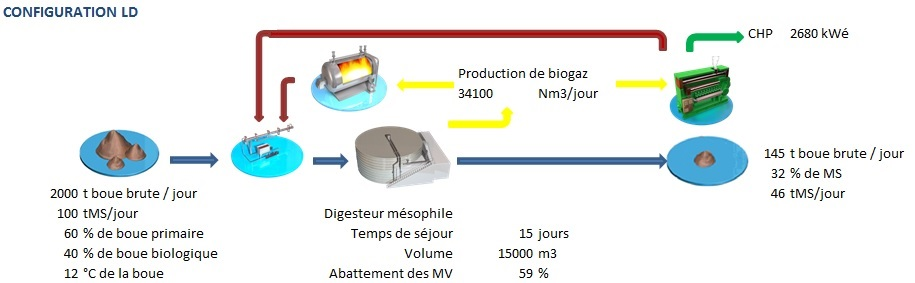
La boue primaire ne présentant que peu d'intérêt à être hydrolysée si ce n'est pour une question d'hygiénisation, une alternative consiste à ne traiter que la boue biologique. Le bilan 3.9 présente cette configuration toujours sur base des hypothèses précédentes. Les calculs montrent que la taille du digesteur, la production de biogaz et le volume final des boues sont impactés mais que la taille du réacteur et sa consommation de vapeur sont moindres.
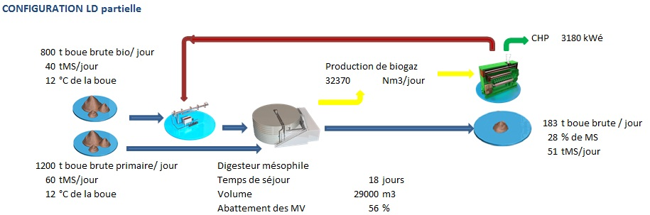
Le bilan 3.10 reprend la même quantité de boue mais dans une configuration DL jamais mise en œuvre. Une fraction de la boue déjà digérée est hydrolysée puis recirculée au sein du même digesteur. Cette configuration permettrait en théorie d'augmenter l'abattement des matières volatiles jusqu'à 59 %, d'augmenter ainsi la production de biogaz et d'augmenter la siccité de sortie réduisant le volume de boue finale. Cependant, la boue à l'entrée étant un mélange de boue fraîche à 5 % MS et de boue hydrolysée à 8 % MS, la taille du digesteur s'en trouve légèrement augmentée.
Installée sur un digesteur fonctionnant en sous-capacité, c'est-à-dire ne traitant pas son volume nominal de boue, cette configuration permettrait de maximiser la production de biogaz tout en réduisant davantage le volume final de boue. Elle permettrait également d'avoir une moindre consommation de vapeur, une taille de réacteur plus petite mais, comme seulement une fraction de boue serait traitée, la boue finale ne serait pas considérée comme hygiénisée.
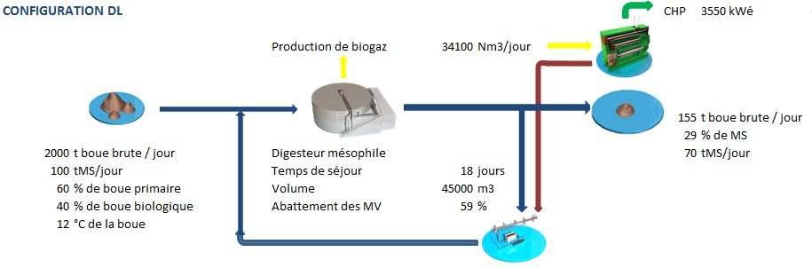
Le bilan 3.11 reprend la même quantité de boue que précédemment. La boue est digérée une première fois dans un premier étage de digestion réduisant la quantité de boue à hydrolyser du fait de l'abattement des matières volatiles dans le digesteur et de l'augmentation de siccité rendue possible par cette diminution des matières volatiles. Ainsi, la taille du réacteur d'hydrolyse et la consommation vapeur du procédé sont réduites. Après traitement, la boue va de nouveau être digérée au sein d'un second étage de digestion. L'hypothèse d'abattement des matières volatiles pour l'ensemble de la configuration est ici considérée de 64 %. Cet abattement sera vérifié expérimentalement lors de ce travail.
Cette configuration permettrait de produire davantage de biogaz, de pousser davantage la réduction des boues en passant de 2 000 à 123 tonnes de boue brute par jour. Elle permettrait de réduire la taille du réacteur d'hydrolyse thermique, de consommer moins de vapeur, de produire davantage de biogaz mais elle nécessiterait l'implémentation d'un nouveau digesteur. L'intégralité de la boue étant traitée, la boue déshydratée est considérée comme hygiénisée.
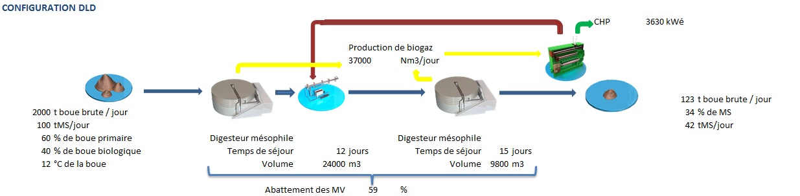
Le tableau 3.2 synthétise les points calculés dans les bilans simplifiés. En fonction du besoin d'hygiénisation ou non, de l'existence ou non d'un digesteur et du besoin du site d'augmenter sa production de biogaz, de réduire son volume final de boue, soit du contexte local, l'une ou l'autre des configurations pourra être choisie.
Sur base d'une hypothèse d'abattement des matières volatiles de 64 %, la configuration DLD est celle permettant d'hygiéniser la boue, de réduire la taille du réacteur de 40 %, de réduire de 51 % de plus le volume final des boues par rapport à ce qui aurait pu être obtenu avec un digesteur, d'augmenter de 31 % la production de biogaz, et donc la production d'électricité, par rapport à un unique digesteur, tout en contenant la consommation de polymère. Cet abattement des matières volatiles et cette augmentation de production de biogaz seront vérifiés dans ces travaux.
Tableau 3.2 — Comparaison chiffrée des différentes configurations
| Digestion simple | LD partielle | LD | DL | DLD partielle | DLD | |
|---|---|---|---|---|---|---|
| Hygiénisation | non | non | oui | non | oui | oui |
| Taille du digesteur (base 100 : digesteur à 20 jours) | 100 | 61 | 41 | 113 | 61 | 86 |
| Taille THP | / | 56 | 100 | 52 | 83 | 60 |
| Réduction du volume de boue / digesteur simple | / | −22 % | −40 % | −36 % | −48 % | −51 % |
| Production de biogaz / digesteur simple | / | 12 % | 21 % | 18 % | 13 % | 31 % |
| Production électrique / digesteur simple | / | +6 % | −9 % | +18 % | +13 % | +31 % |
| Consommation de polymère / digesteur simple | / | +104 % | +176 % | +105 % | +128 % | +78 % |
3.2 Matériel et méthodes
3.2.1 Vérification de l'évapo-condensation de la vapeur
L'injection de la vapeur et surtout sa condensation est le premier point à étudier et à améliorer. C'est pour cela que des modélisations sous Ansys-Fluent sur la base du modèle d'écoulement polyphasique de type Euler-Euler sont réalisées.
La partie expérimentale est importante pour valider le mode d'injection vapeur, tant du point de vue modélisation qu'expérimentalement. Cette validation expérimentale se base sur une cartographie des températures du réacteur établie à partir de mesures de sondes de températures situées tout au long du réacteur et permettant de s'assurer de l'homogénéité des températures.
La figure 3.12 représente la canne d'injection initiale testée sur l'unité de recherche pré-industrielle. Le design de cette canne d'injection est empirique. Des trous d'un diamètre de 3 mm sont répartis sur le pourtour de la canne de manière à ce que la vitesse de la vapeur soit inférieure à 20 m/s à la sortie de chacun des trous. Ce diamètre de 3 mm est arbitraire et doit permettre l'injection de vapeur lorsque le procédé fonctionne et limiter les retours de boue dans la canne lors des phases d'arrêt. Ce retour de boue est attendu car, lors de l'arrêt du réacteur sous pression, celui-ci aura une pression résiduelle supérieure à celle de la ligne vapeur. De plus, la vapeur résiduelle contenue dans cette ligne vapeur lors d'un arrêt, en se refroidissant, se condensera créant une dépression dans la ligne et donc une aspiration de la boue du réacteur vers la ligne vapeur.
La vitesse maximale pour la vapeur de 20 m/s est fixée sur la base de recommandations issues de la littérature. À partir de cette vitesse apparaissent des vibrations dans les réseaux vapeur ainsi qu'un phénomène d'abrasion dues aux frottements de la vapeur (notamment lorsqu'il s'agit de vapeur humide).
La vitesse de vapeur en sortie de canne d'injection est censée être freinée suite à son impact sur les parois du réacteur avant de dissiper son énergie dans la boue. La vapeur est injectée au centre de la canalisation, à co-courant du flux de boue qui arrive par la canalisation de droite.
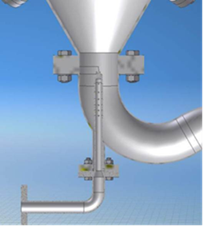
Les modélisations montrent qu'avec ce type d'injecteur des poches de vapeur peuvent ne pas se condenser totalement dans la colonne de condensation. Il est donc nécessaire d'envisager des solutions alternatives à cette géométrie. Des modifications de cette canne d'injection sont présentées en annexe. Tout comme la géométrie initiale, ces injecteurs statiques modélisés en annexe ne donnent pas satisfaction pour des raisons identiques. Deux alternatives restent à envisager à savoir des combinés injecteur vapeur – mélangeur statique ainsi que l'utilisation d'un mélangeur dynamique.
Les modes alternatifs d'injection vapeur envisagés :
En ce qui concerne les combinés injecteur vapeur – mélangeur statique tel que celui présenté figure 3.13, ils présentent deux points bloquants liés à la technologie en elle-même, à savoir :
- La siccité élevée des boues, et donc leur viscosité, qui rend difficile l'injection de vapeur ;
- Les vitesses faibles d'écoulement de la boue qui ne permettent pas de provoquer un écoulement turbulent au niveau de l'injecteur nécessaire pour que le mélange boue – vapeur se fasse correctement et que la vapeur se condense.
L'utilisation d'un mélangeur dynamique semble palier à ces deux limitations opératoires imposées par la siccité et la viscosité des boues. La figure 3.14 présente ce type d'équipement qui permet, au sein d'un même équipement, d'injecter un fluide secondaire, dans notre cas de la vapeur, et de le mélanger avec un fluide principal, à savoir la boue.
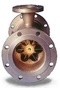
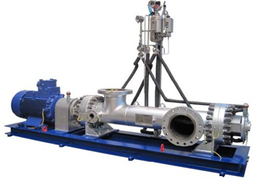
Ce mélangeur dynamique, présenté figures 3.14 et 3.15, est composé d'une chambre recevant les deux fluides au sein de laquelle un rotor tournant à une vitesse allant de 900 à 1 500 tr/min assure un parfait mélange en fonction de leurs caractéristiques respectives.
La géométrie du rotor utilisée est celle de la figure 3.16. Selon le fournisseur de cet équipement, l'utilisation de pâles ayant un angle à 45 degrés permet de maximiser l'agitation et d'obtenir un brassage efficace du fluide visqueux tout en limitant l'encrassement du rotor.
En sortie de mélangeur dynamique, le mélange boue vapeur en amont du réacteur doit être homogène et monophasique. Cette homogénéité sera vérifiée expérimentalement sur le pilote.
Les modes d'injection vapeur testés :
Deux modes d'injection de la vapeur sont testés sur l'unité pré-industrielle, à savoir la canne d'injection de la figure 3.12 ainsi que le mélangeur dynamique de la figure 3.15 muni du rotor de la figure 3.16.
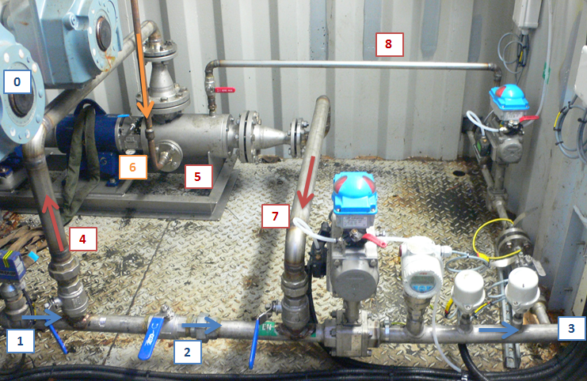
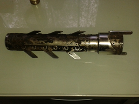
Le montage du mélangeur dynamique est présenté figure 3.15. Initialement, la boue située dans la trémie de stockage [0] est pompée et envoyée dans le réacteur en suivant les canalisations [1], [2] et [3]. C'est au bout de la canalisation [3] que se trouve la canne d'injection telle que présentée figure 3.12. Afin de pouvoir passer d'un système d'injection à l'autre, le mélangeur dynamique est monté en amont de la canne d'injection, en parallèle de la ligne d'alimentation en boue de la canne d'injection vapeur. Le passage d'un système à l'autre se fait grâce à des vannes manuelles sur les canalisations [4], [2] et [7] permettant de passer du mélangeur dynamique à la canne d'injection et inversement. Deux vannes manuelles non représentées permettent d'orienter la vapeur vers la canne ou bien le mélangeur. Lorsque le mélangeur est utilisé, la boue arrive par la canalisation [1] puis est envoyée dans le mélangeur dynamique [5] via la canalisation [4]. La boue arrive dans le mélangeur dynamique en partie haute et vient en contact avec la vapeur vive injectée latéralement [6]. Les deux fluides sont mixés à 1 500 tr/min grâce au rotor de la figure 3.16 puis envoyés dans le réacteur via la canalisation [7].
Moyens de contrôle de la condensation de la vapeur :
À la conception de l'unité, les phénomènes d'évapo-condensation n'ont pas été considérés car, par méconnaissance, il a été considéré que la vapeur allait se condenser instantanément. Ainsi, seules 9 sondes de température ont été prévues pour suivre le fonctionnement de l'installation et analyser les gradients thermiques le long de la partie horizontale du réacteur. Comme indiqué sur la figure 3.17, l'unité n'était pourvue que d'une unique sonde T1 en haut de la colonne d'injection, de quatre sondes T2, T3, T4 et T5 à l'entrée du réacteur horizontal, de deux sondes T6 et T7 en partie haute et basse au milieu et de deux sondes T8 et T9 en sortie du réacteur.
Afin de contrôler la condensation de la vapeur au sein d'un réacteur sous pression contenant de la boue, il est apparu nécessaire de cartographier le plus précisément possible les températures le long de la partie verticale du réacteur servant de colonne d'injection et de condensation de la vapeur. La colonne de condensation avec sa sonde unique est donc sous-instrumentée pour les besoins de l'étude. Pour compléter l'instrumentation existante, des multisondes de température ont été installées le long du condenseur ainsi qu'au milieu et à la sortie du réacteur. L'emplacement de ces sondes, nommées de Multi T1 à Multi T7, est aussi indiqué sur le schéma 3.17. Ainsi instrumenté, il est possible de vérifier et comparer le comportement de la canne d'injection et du mélangeur dynamique.
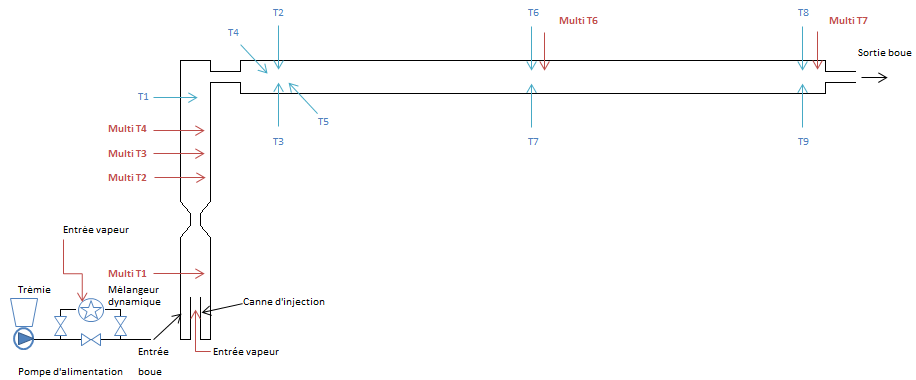
Ces multisondes, présentées à la figure 3.18, ont un design réalisé sur mesure. Chaque transmetteur bleu est relié à quatre sondes PT100. L'espacement entre ces sondes est prévu pour commencer à deux centimètres de la paroi du réacteur et mesurer un profil de température tous les deux centimètres.
Afin de gagner en précision et en temps de réponse, les doigts de gant des sondes sont enlevés. L'étanchéité est assurée au niveau des transmetteurs. Au total, ce sont 4 transmetteurs munis de 4 sondes PT100 chacun qui sont installés dans le condenseur correspondant à un ajout de 16 sondes de température. Dans le réacteur, ce sont 2 transmetteurs munis chacun de 4 sondes PT100 qui sont installés soit 8 sondes ajoutées dans le réacteur.
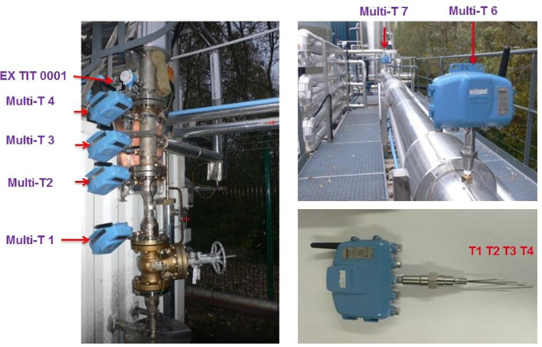
3.2.2 Modélisation des déformations du réacteur
Tout gradient de température au sein d'un réacteur peut, sous l'effet de la dilatation des matériaux, engendrer des contraintes mécaniques déformant la structure d'un réacteur. Ainsi, la modélisation des déformations du réacteur est envisagée en vue de vérifier l'impact d'une condensation imparfaite de la vapeur, lors de la phase de démarrage et en vue d'un passage à une échelle industrielle, et de s'interroger par la même sur la géométrie retenue.
Pour traiter ce point :
- Des mesures ponctuelles de température seront faites sur la partie externe du réacteur lorsque celui-ci aura un fonctionnement stable. Ces mesures seront réalisées au moyen d'une sonde contact.
- Une modélisation du procédé sera réalisée sous le logiciel AutoPipe-Bentley.
Les mesures de la température de peau du réacteur nécessitent de démonter le calorifuge du réacteur de manière à mesurer la température aux points nord, sud, est, ouest à l'entrée, au milieu et à la sortie du réacteur. Comme indiqué sur les images des figures 3.19, les points mesurés de la température externe de peau du réacteur sont pris au niveau des mesures des températures internes de manière à pouvoir croiser les températures internes et externes lors de la modélisation des contraintes. Il apparaît aussi que les points des mesures se situent aussi à proximité des supports du réacteur. Le réacteur repose sur des supports métalliques non isolés qui peuvent, par conduction, venir accentuer un gradient thermique et donc les contraintes thermiques.
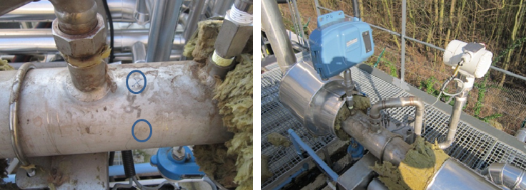
La modélisation du réacteur est faite sous le logiciel AutoPipe qui est un programme de dimensionnement des réseaux et de calcul des contraintes mécaniques liées aux stress thermiques et mécaniques d'une installation. La figure 3.20 décrit les éléments de la simulation avec des sections identiques aux dimensions de l'unité pré-industrielle, d'une longueur de 2,5 m reliés par des brides en PN40, ainsi que les nœuds. Le supportage du réacteur est également indiqué en vert.
| AutoPIPE | Code de calcul EN 13480 | |
|---|---|---|
| Pression de calcul PS | 18 barg | |
| Température de calcul TS | 207°C | |
| Effet « Thermal bowing en service » | Température génératrice supérieure | 165°C |
| Température génératrice inférieure | 85°C | |
| Masse volumique | Situation de service (Vapeur + boue) | 1 000 kg/m³ |
| Situation de bourrage (Boue) | 1 000 kg/m³ | |
| Matériau | 1,4404 selon EN10217-7 (Inox 316 L) | |
| Surépaisseur de corrosion | 0 mm | |
| Épaisseur du calorifuge | 100 mm / 80 kg/m³ | |
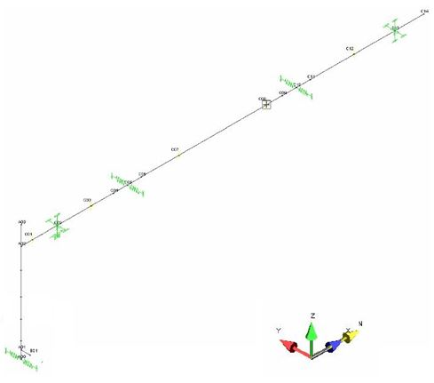
Le diamètre du réacteur renseigné, on arrive au modèle de la figure 3.21 qui correspond à l'installation réelle exploitée.
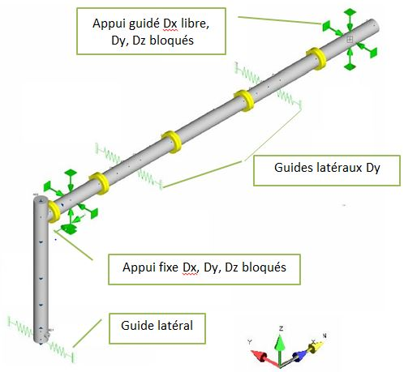
Sont aussi définis les nœuds, les matériaux utilisés, les contraintes en chaque point, l'emplacement des guides latéraux permettant à la structure de ne se déplacer que dans la direction souhaitée, l'ajout d'un appui fixe à l'entrée de la partie horizontale pour assurer une rigidité avec la partie verticale, et l'ajout d'un guide en sortie pour laisser le réacteur libre de se dilater longitudinalement. Un effet dit de « thermal bowing » est imposé à la structure via un gradient de température de 85 °C imposé entre le haut et le bas du réacteur à chaque segment.
3.2.3 Validation de la configuration DLD
La validation des performances de la configuration DLD passe par l'exploitation de l'unité pré-industrielle. Afin de pouvoir réaliser le bilan massique, il est nécessaire d'analyser les informations de nombreux capteurs placés sur l'unité pré-industrielle et de les coupler avec des analyses d'échantillons de boue.
Les données de ces capteurs sont extraites de la supervision via un logiciel d'acquisition de données de type « client Open Platform Communication » permettant de communiquer avec le serveur OPC mais aussi de les rapatrier et de les mettre en forme.
En parallèle, des analyses de laboratoire seront menées sur site aux points de l'installation indiqués figure 3.22 pour caractériser les performances du procédé en termes d'abattement de MV et de production de biogaz et suivre la bonne santé de la biologie des digesteurs.
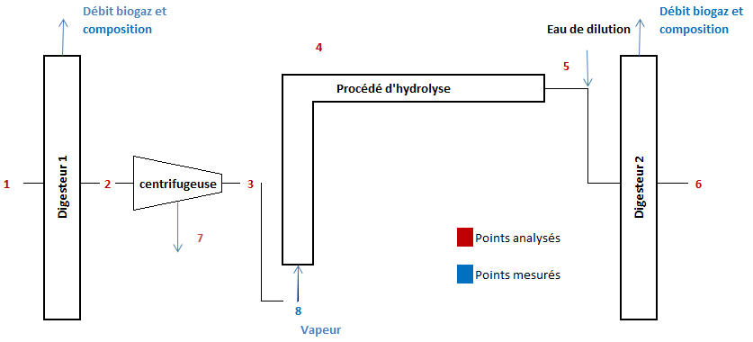
Le programme des analyses biologiques consiste à suivre :
- Des points 1 à 6 : MS, MES, MV, DCO, DCOs, N, NH₄, P, PO₄
- Au point 7 : MS, MES, MV
Tous les débits et paramètres de l'installation sont enregistrés en continu à la minute. Grâce à un logiciel OPC, des rapports de données des 2 000 paramètres de l'unité pré-industrielle sont automatiquement générés. De ces 2 000 paramètres, 400 permettent de suivre les performances quotidiennes de l'installation et 1 600 autres permettent de scruter toute défaillance, de les analyser afin de fiabiliser le procédé et d'arriver à stabiliser son fonctionnement.
La quantité de données étant très importante, un programme en Visual Basic Application sera réalisé afin d'automatiser tout le traitement, les mettre en forme par atelier, calculer des indicateurs clefs, tracer les courbes d'exploitation et établir les bilans.
3.3 Résultats et discussions
3.3.1 Suivi des températures
Le procédé étudié étant à une température élevée et en pression, le suivi et la cartographie des températures apparaît comme le seul moyen à disposition pour évaluer le transfert, et donc la bonne condensation, de la vapeur vers la boue.
Suivi des températures du condenseur avec la canne d'injection :
Les premiers tests de l'unité pré-industrielle servent à évaluer l'efficacité de la canne d'injection vapeur et, en parallèle, à alimenter le modèle numérique. L'unité est donc démarrée dans sa configuration initiale. Les températures suivies sont les neuf sondes initialement prévues. La figure 3.23 présente les résultats obtenus dès la première journée de test.
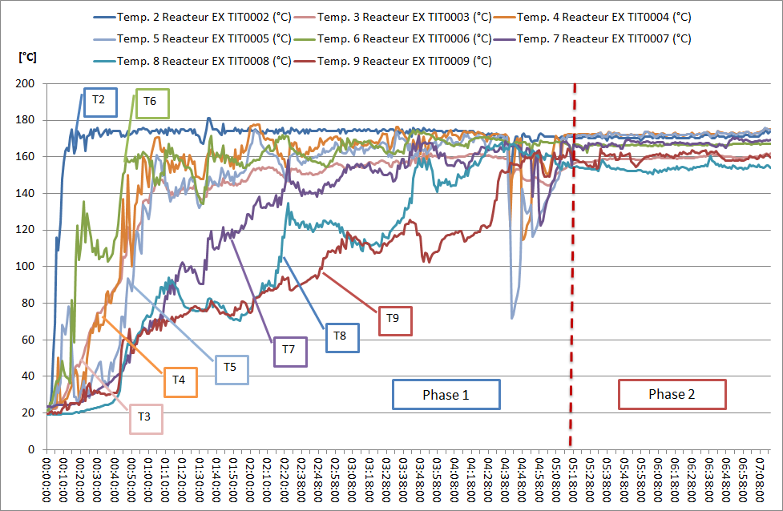
Ce graphique est scindé en deux phases. Une première phase correspondant à la montée en régime du procédé puis, une seconde phase correspondant à un régime stabilisé.
Lors de la phase 1, après avoir démarré le pilote au temps t₀, la température T2 située à l'entrée du réacteur horizontal indique une température de 120 °C au bout de 5 minutes puis de 175 °C au bout de 15 minutes. Ainsi, au bout d'un temps court, cette sonde mesure une température proche de celle de la vapeur injectée à 10 bar, soit 180 °C. Par la suite, la mesure T2 reste stable avec une valeur située autour de 175 °C.
Si l'on observe maintenant la sonde T3 qui se situe en entrée du réacteur horizontal, 6 cm sous la sonde T2, on remarque que la température au bout de 5 minutes est de 23,4 °C puis de 39,2 °C au bout de 15 minutes.
Les sondes latérales T4 et T5, situées en entrée du réacteur, mesurent des températures proches de celle de T3 tout au long de la montée en température du réacteur.
La sonde T6 située au milieu du réacteur, en partie haute, est la seconde sonde dont la montée en température est rapide. Elle atteint une valeur de 157 °C au bout de 51 minutes. Au même instant, la sonde T7 située 6 cm en dessous mesure une température de 56,4 °C. Ainsi, au milieu du réacteur et sur 6 cm d'écart, la différence de température est de près de 100 °C ce qui n'est pas sans conséquence sur les contraintes mécaniques due à la dilatation thermique du réacteur.
Concernant les sondes T8 et T9 situées en sortie de réacteur, il apparaît qu'au bout de 2 heures et 15 minutes, la sonde T8 est à 96 °C et la T9 à 88 °C. Ces sondes ne détectent une température de 160 °C qu'au-delà de 4 heures ce qui correspond à 8 fois le temps de séjour initial d'une hydrolyse qui doit se faire en 30 minutes.
Lors de la phase 2, où les courbes se stabilisent au-delà de 150 °C, des écarts de température subsistent au sein de la partie horizontale du réacteur de l'ordre de 25–30 °C.
Lors de cette phase 1 de démarrage, la rapidité à laquelle la sonde T2 voit une température élevée, les écarts de température de plus de 100 °C entre la T2 et la T3, de même que la rapidité de la montée en température de la T6 et les écarts entre la T6 et la T7 même jusqu'à 1 heure 30, ne peut s'expliquer que par le fait que la vapeur ne se condense pas dans la colonne de condensation. Il est probable qu'une fois la vapeur injectée, celle-ci se crée un chemin préférentiel à travers la boue, arrive en T2, puis continue de créer une veine de vapeur tout le long du réacteur chauffant ainsi préférentiellement les sondes T6 et T8. Le mélange boue vapeur est donc inhomogène à la sortie de la colonne de condensation.
Le venturi présent au milieu de colonne ne permet visiblement pas de réaliser cette homogénéité. Le système de venturi n'a semble-t-il aucun impact positif sur la condensation de la vapeur dans la boue. En cela, l'expérimentation contredit les simulations numériques qui laissaient penser que le venturi pourrait retenir les poches de vapeur ce qui n'est pas le cas.
Lors de la phase 2, après une durée de mise en régime de 5 heures, ce qui pour un procédé ayant un temps de séjour initial de 30 minutes est long, les écarts entre les sondes distantes de 6 centimètres restent de l'ordre de 25 °C.
Suite à ces premières constatations, il apparaît nécessaire :
- D'instrumenter davantage le réacteur, et notamment la colonne d'injection vapeur, afin d'affiner la compréhension des phénomènes,
- De tester un système d'injection de vapeur alternatif, à savoir le mélangeur dynamique.
Les écarts de température conséquents sur un réacteur d'un diamètre de 100 millimètres soulèvent deux questions, à savoir : que vont devenir ces écarts de températures lors du passage à une taille industrielle ? Du fait des contraintes mécaniques que ces différences de température engendrent, la géométrie du procédé est-elle judicieuse ?
Suivi des températures avec et sans mélangeur dynamique :
Installées tout au long de la colonne, les sondes additionnelles mesurant les profils de température permettent de comparer l'efficacité des moyens d'injection de la vapeur. Ainsi, il est observé : la mesure la plus proche du point d'injection ; les mesures sortie de colonne ; les mesures au milieu et en sortie de réacteur.
La courbe 3.24 compare le suivi de cette première température située à l'entrée du réacteur vertical pour les deux moyens d'injection vapeur à savoir la canne d'injection et un mélangeur dynamique.
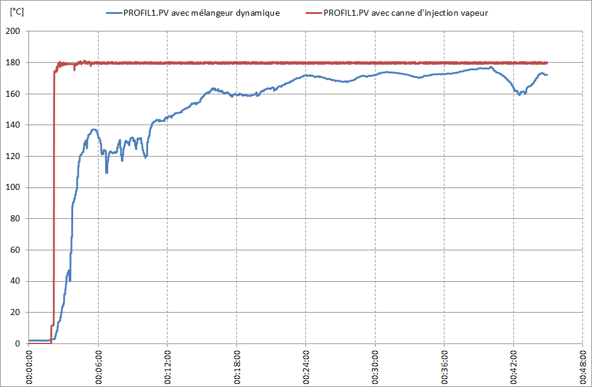
Tout comme cela a été observé par la mesure de la sonde T2, avec la canne d'injection vapeur, la mesure taggée « PROFIL 1PV » atteint très rapidement la température de la vapeur. Ainsi, la mesure de température de la courbe rouge passe de 20 à 180 °C en 1 minute.
En injectant maintenant la vapeur au sein d'un mélangeur dynamique tournant à haute vitesse, soit 1 500 tr/min, on observe sur la courbe bleue que la montée en température est plus progressive. Une fois en régime, les points de la courbe bleue se stabilisent autour de la température de consigne de 165 °C mais la température mesurée évolue progressivement jusqu'à ce point de consigne en 15–20 minutes alors que sans le mélangeur, cette sonde détecte une température de plus de 170 °C en moins d'une minute. Un effet positif du mélangeur dynamique est donc observé dès le point d'injection.
Tout comme la figure 3.24, les courbes de la figure 3.25 comparent les profils de température obtenus en sortie de la partie verticale, avec la canne d'injection puis avec le mélangeur dynamique. Il apparaît de nouveau une montée en température progressive puis une stabilisation de celle-ci. Ainsi, sur toute la hauteur du réacteur, la montée en température est progressive ce qui exclut tout chemin préférentiel. En effet, lors du fonctionnement du mélangeur dynamique, les profils de température « PROFIL5 » PV.SV.TV.QV.md mettent plus de 15 minutes pour atteindre les 160 °C ce qui est cohérent avec l'hydraulique du système. À l'opposé, lors du fonctionnement du procédé avec la canne d'injection, les profils de température « PROFIL5 » PV.SV.TV.QV.ci atteignent une température de 180 °C soit la température de la vapeur injectée à 10 bar.
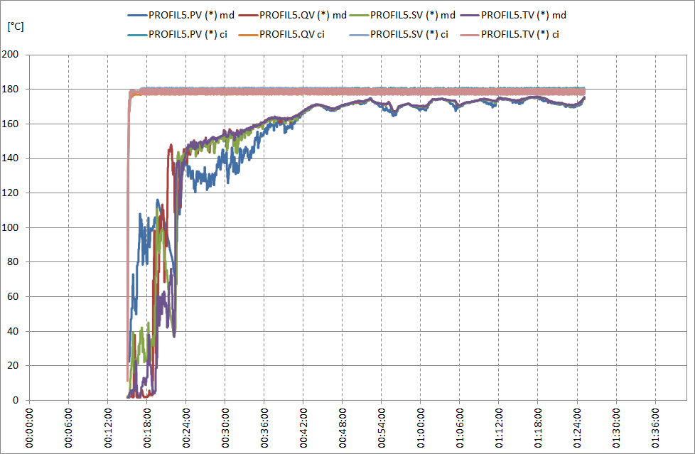
Comme il est visible sur la figure 3.26, cette homogénéité des températures se retrouve aussi et surtout au centre et à la sortie du réacteur. Cette homogénéité des températures a de nouveau lieu après une montée progressive au centre et en sortie du réacteur.
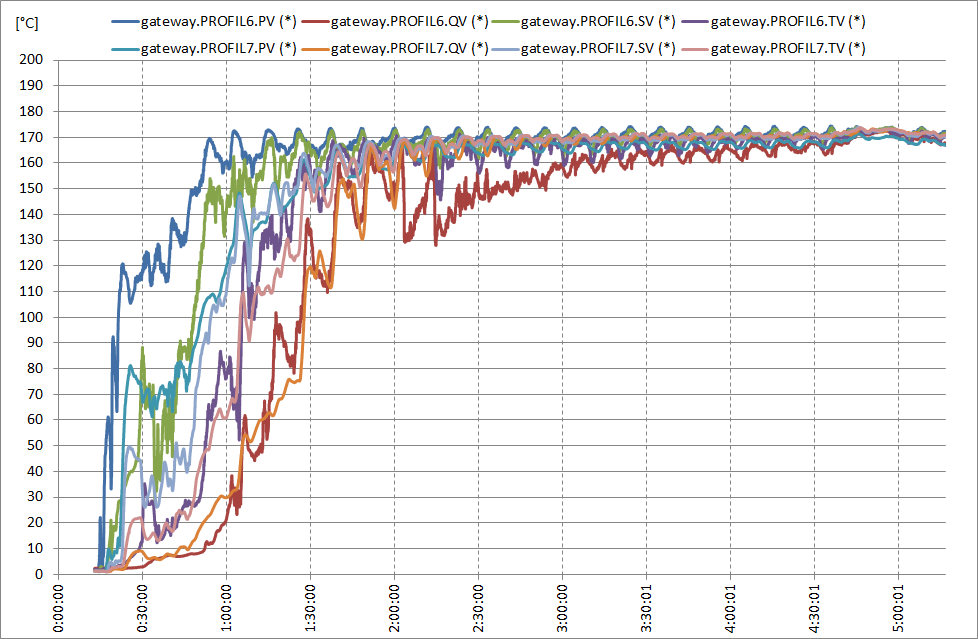
Cette montée en régime est plus progressive que dans la partie verticale. On observe sur cette figure que les mesures situées en partie haute du réacteur horizontal, à savoir les « PROFIL 6 PV » et « PROFIL6 SV » ainsi que les « PROFIL 7 PV » et « PROFIL7 SV », atteignent elles aussi plus rapidement la température de consigne. Ce phénomène pourrait s'expliquer par l'arrivée de boue chaude sur de la boue froide précédemment restée dans le réacteur entraînant une stratification des températures lors de la phase de démarrage. Ces écarts sont de 30 à 40 °C. Il faut deux heures pour que les températures soient toutes autour de 165 °C ce qui est problématique car cela représente une quantité de boue non négligeable n'ayant pas eu sa température de traitement ou bien son temps de réaction de 30 minutes. Ceci pose question sur la forme du réacteur et sa partie horizontale.
Au vu des résultats obtenus, l'usage du mélangeur dynamique pour injecter la vapeur et la mélanger avec la boue de manière à favoriser sa condensation est une solution satisfaisante. Son utilisation permet d'assurer l'homogénéité des températures dans le réacteur vertical (en environ 15 minutes) ainsi qu'au sein du réacteur horizontal (en environ 1 h 30).
3.3.2 Déformation du réacteur
Sur un procédé en DN 100, grâce au mélangeur dynamique, les températures s'homogénéisent rapidement, de manière uniforme dans la partie verticale, après avoir présenté un gradient thermique dans la partie horizontale. Ce gradient thermique, bien que temporaire, est suffisant pour induire des contraintes mécaniques sur la structure notamment lors de la phase de mise en route. Il semble opportun de simuler la déformation thermique du réacteur afin d'estimer son impact sur la structure. Ceci pourrait remettre en cause la géométrie actuelle du procédé. Pour étudier ce point, des mesures ponctuelles de température de peau du réacteur sont relevées et croisées avec les températures internes.
Les mesures ponctuelles de la température de peau, croisées avec celles internes au réacteur, sont présentées dans le tableau 3.4. Les mesures de peaux sont nommées de T1 à T12. La mesure extérieure T1 est faite au niveau de la mesure interne TIT 0002. Il en va de même pour les mesures T2, T3 et T4. Les températures mesurées sur le pourtour extérieur du réacteur de T5 à T8 sont moyennées et comparées à la moyenne des températures des sondes du profil 6. Il en va de même avec les mesures de T9 à T12 et des sondes du profil 7.
Tableau 3.4 — Différence entre les températures de peau mesurées et les températures internes du procédé
| TIT 0002 – T1 | TIT 0003 – T2 | TIT 0004 – T3 | TIT 0005 – T4 | Profil 6 – (T5-8) | Profil 7 – T(9-12) | |
|---|---|---|---|---|---|---|
| ΔT minimale [°C] | 6 | 2 | 7 | 6 | 0 | 1 |
| ΔT moyenne [°C] | 29 | 36 | 26,5 | 31,1 | 23,7 | 21,1 |
| ΔT maximale [°C] | 53 | 61 | 66 | 64 | 42 | 37,5 |
Lorsque le réacteur est stabilisé, ce qui correspond aux valeurs minimales du tableau, les écarts de températures sont inférieurs à 10 °C.
Lors du démarrage, qui correspond aux valeurs maximales du tableau, il apparaît que les écarts entre l'intérieur du réacteur et la peau sont de l'ordre de 37 à 66 °C pour un réacteur en DN 100. Les écarts les plus conséquents semblent se situer au niveau des supportages, éléments métalliques qui par leur contact direct avec le métal du réacteur, pourraient favoriser les échanges thermiques par conduction.
Une déformation du réacteur est simulée sur base d'un gradient thermique imposé entre le haut et le bas du réacteur. Les mesures du tableau 3.4 issues de l'expérimentation montrent un écart maximal observé de 66 °C. L'écart de température utilisé pour la simulation correspond à ces 66 °C arbitrairement augmenté de 20 %.
La figure 3.27 représente la modélisation de la courbure du réacteur engendrée par l'écart de température. Il ressort de la simulation que la partie horizontale du réacteur se déforme entraînant des contraintes sur la partie verticale. Le réacteur subit également une déformation maximale en son centre, au nœud CB08, de 23,09 mm dans le sens de la longueur et de 53,01 mm dans le sens de la hauteur soit une déformation cumulée de 57,82 mm.
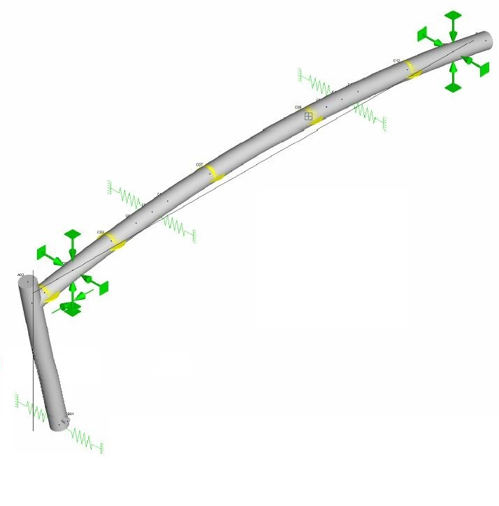
Avec une telle déformation, des absorbeurs de dilatation sont à prévoir sur le réacteur pleine échelle afin de le maintenir dans son axe tout en permettant au réacteur de se dilater.
En tenant compte de la montée en température progressive et homogène de la boue dans la partie verticale et des dilatations thermiques du réacteur, il semblerait opportun de revoir la géométrie du procédé et de partir sur une conception uniquement verticale. Une conception verticale permettrait de garantir l'homogénéité des températures mais aussi de n'avoir des dilatations que selon une unique direction.
3.3.3 Performances du procédé dans sa configuration DLD
Comme évoqué au chapitre 2, les procédés d'hydrolyse thermique sont utilisés en amont d'un digesteur. Réaliser une hydrolyse en continu est une nouvelle approche. Cette étude est l'occasion de tester l'intérêt d'une configuration dite DLD, de valider les performances du procédé d'hydrolyse mais aussi les performances globales de cette configuration.
L'unité a été exploitée durant trois années durant lesquelles plusieurs phases ont été mises en œuvre. La première phase a consisté à ensemencer les digesteurs uniquement en boue primaire, à savoir injecter de la boue fraîche dans les digesteurs maintenus dans des conditions mésophiles à 37 °C, afin de créer la population microbienne nécessaire à la digestion. Cette étape nécessite d'avoir une alimentation et un fonctionnement des digesteurs continus sur une durée allant de 2 à 3 fois le volume du digesteur, soit de 50 à 90 jours comme recommandé par la littérature.
Cette période conséquente de montée en charge des digesteurs a été mise à profit pour travailler sur le mode d'injection de la vapeur. Une fois ce mode d'injection vapeur défini, il était alors possible d'hydrolyser des boues sur une période représentant 2 fois le volume du second digesteur. Ainsi, d'une alimentation composée à 100 % de boue primaire on est passé à une alimentation en boue composée de 40 % de boue primaire et de 60 % de boue biologique pour finir à un ratio 45 % primaire 55 % biologique. Il a de nouveau fallu attendre que la population microbienne du digesteur 1 s'adapte à ces boues mais aussi que la population microbienne du second digesteur s'adapte aux boues hydrolysées. Afin de définir les performances globales du système, il est nécessaire que l'intégralité des équipements de la figure 3.22 fonctionnent en continu sur un minimum de 2 mois. Les paramètres présentés ci-après sont le résultat de ce fonctionnement stabilisé.
Suivi des paramètres du Digesteur 1 :
Les digesteurs permettent de réduire la charge polluante massique en termes de matière sèche (MS), de matière volatile (MV) et de demande chimique en oxygène (DCO) tout en convertissant cette charge polluante en biogaz. Ce sont ces paramètres qui sont suivis.
Le taux de matière sèche reçue par le premier digesteur est un paramètre dépendant de l'usine. Pour des questions de coûts liés à la taille du digesteur, ces boues sont généralement épaissies à environ 5 % de MS. Cette valeur est communément admise et se retrouve dans la littérature. La figure 3.28 indique le taux de MS des boues qui arrive sur l'installation.
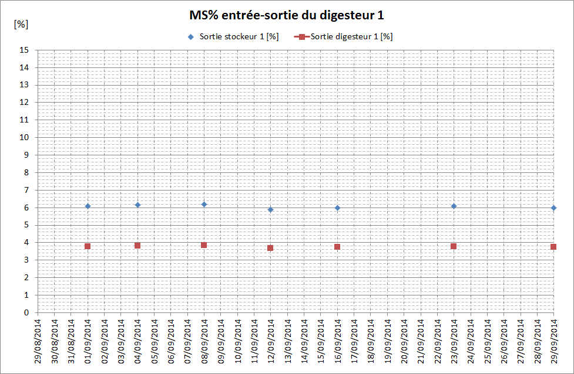
Les boues en sortie du stockeur 1, et donc arrivant à l'entrée du premier digesteur, ont une concentration moyenne et stable de 6 % de MS. Cette valeur correspond à une valeur classique. Après un temps de séjour de 12 jours, la concentration des boues passe de 6 à 3,7 % soit un taux d'abattement des MS de 38 %.
La mesure des MV se fait en proportion des MS. Ainsi, pour une charge massique de matière sèche, une fraction de cette masse correspond aux matières volatiles. C'est principalement cette fraction qui va se convertir en biogaz. Le suivi de ce paramètre est donc important car il résume le bon fonctionnement du digesteur. La figure 3.29 présente le suivi de la matière organique dans le digesteur. La valeur d'entrée des matières volatiles est liée à l'effluent entrée de la station. Cette valeur est subie et est d'une valeur moyenne de 75,1 % ce qui est une valeur classique que l'on retrouve dans la littérature.
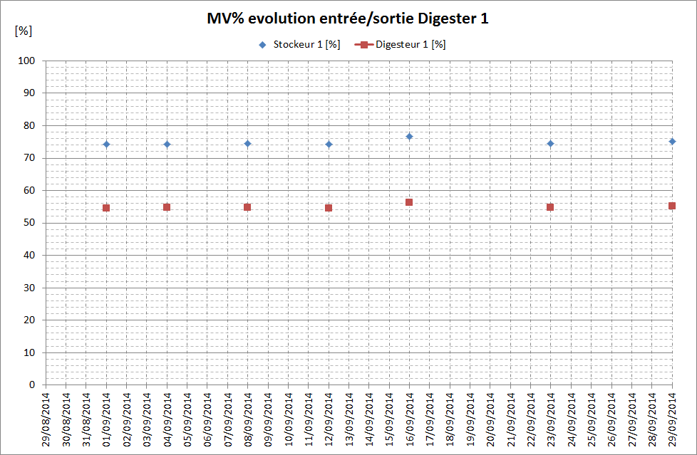
Le taux moyen de matière volatile en sortie de réacteur est de 55,2 % de MV. Sachant que sur la période considérée le débit moyen d'alimentation journalier du digesteur 1 est de 13 090 [l/jour], le taux d'abattement des MV se calcule par l'expression (3.1) suivante :
(3.1)
1 − (MSout × MVout) / (MSin × MVin)
= 1 − (13 090 [l/jour] × 3,8 [% de MS] × 55 [% de MV]) / (13 090 [l/jour] × 6,1 [% de MS] × 75 [% de MV])
= 55,2 [%]
Ce calcul peut se réaliser de la sorte car le premier digesteur étant particulièrement bien agité il n'a pas été constaté de perte de matière minérale lors de la vidange du digesteur suite à l'arrêt de l'unité expérimentale.
Dans un article de référence sur la digestion, Barber présente la figure 3.30. Cette courbe correspond à l'abattement d'un mélange de boue primaire et biologique selon différents ratios. La boue primaire contient 72 % de MV et la boue biologique à 82 % de MV. Les performances d'abattement sont mesurées sur 14 jours de temps de séjour. Ainsi, si l'on prend un mélange à 55 % de primaire – 45 % biologique, cette courbe indique un abattement attendu de l'ordre de 48–50 %.
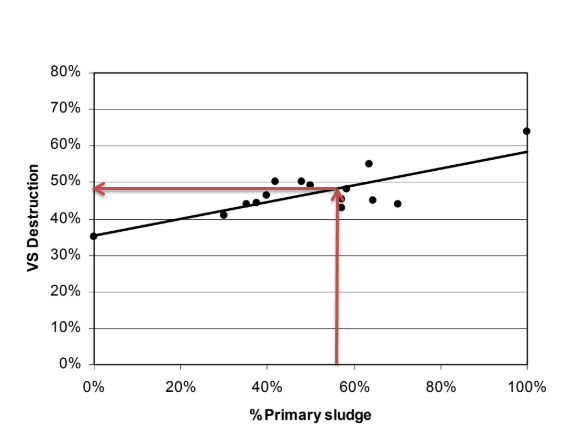
Un taux d'abattement des MV de 55 % est donc cohérent avec l'état de l'art. Les performances du digesteur 1 sont bonnes voire légèrement meilleures qu'attendues (puisque l'on a 55 % d'abattement en 12 jours au lieu de 48–50 % en 15 jours). Ceci pourrait s'expliquer par la petite taille du digesteur et son fort brassage.
Deux autres paramètres semblent intéressants à suivre au niveau du digesteur mais aussi en vue d'évaluer l'effet de l'hydrolyse, à savoir la DCO soluble et la DCO totale.
La DCO soluble représente la charge polluante en substances organiques qui sera consommée en premier par les micro-organismes car cette pollution est soluble. La figure 3.31 présente le suivi de cette charge en DCO entrée – sortie du digesteur. La charge entrée est, tout comme les MV, une conséquence de l'effluent entrée usine et de la file de traitement d'eau qui oxyde plus ou moins cette charge polluante.
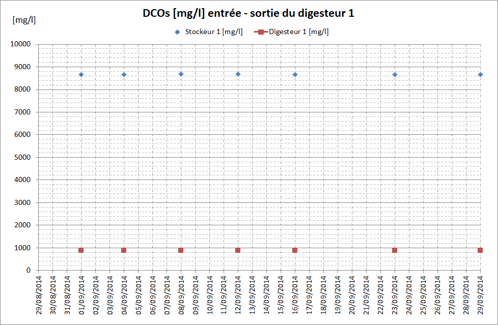
La charge moyenne en DCO entrée digesteur est de 8 673 mg/l. En sortie de digesteur, cette valeur est de 881 mg/l. En croisant ces concentrations avec celles de la figure 3.32 de la DCO totale dont la concentration passe de 72 066 à 32 058 mg/l, on calcule que la part soluble passe de 12 à 2,7 % de la DCO totale. Par l'effet de l'hydrolyse thermique, ce ratio DCO soluble sur DCO totale doit augmenter.
L'abattement calculé de la DCO totale est de 55 % ce qui est cohérent et confirme la mesure et l'abattement des MV.
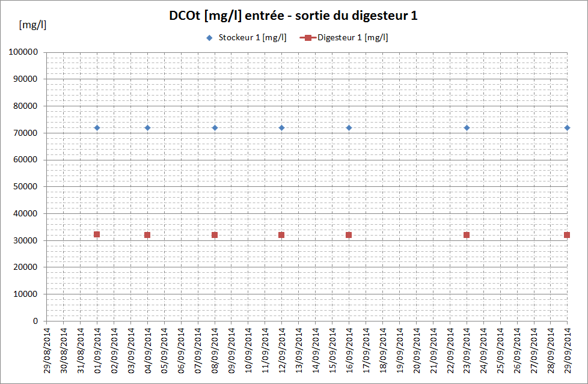
Paramètres de la lyse thermique :
Concernant les paramètres de la lyse thermique, deux paramètres sont à suivre. Le principal est celui de la solubilisation de la DCO. En sortie du premier étage de digestion, les micro-organismes ont consommé une grande partie de la fraction soluble de la charge polluante. La fraction particulaire de la DCO ne peut être dégradée facilement par les bactéries. L'action de l'hydrolyse va casser cette pollution particulaire, la rendre soluble et donc plus accessible aux micro-organismes du digesteur. Les performances de la lyse dépendent du taux de solubilisation.
Le second point suivi est la siccité de la boue afin de déterminer la siccité admissible par le procédé tout en conservant l'effet de solubilisation. Plus la siccité admissible est élevée, moins la consommation d'énergie sera importante.
Le suivi long terme de la solubilisation du procédé aboutit à une solubilisation moyenne de la DCO totale de 27 %. Ceci signifie que 27 % de la pollution particulaire s'est solubilisée et est donc rendue accessible aux micro-organismes. Cela ne signifie pas que l'on aura 27 % de biogaz en plus.
La figure 3.33 présente le suivi de ce paramètre qui, sur une période d'un mois nécessaire à l'établissement du bilan global, est stable.
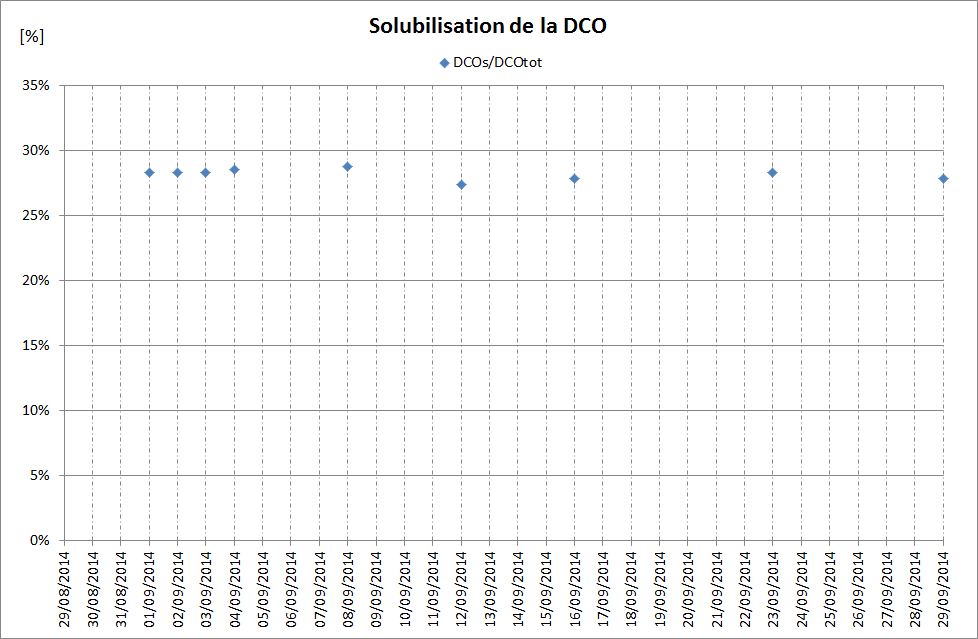
De nombreuses études ont été publiées pour quantifier l'impact de l'hydrolyse thermique sur la solubilisation de la DCO de différents types de boues. Ainsi, pour des boues primaires, la solubilisation varie de 20 à 28 %, celles des boues mixtes urbaines de 20 à 45 %, celles des boues activées urbaines de 35 à 60 % et celles des boues activées industrielles de 50 à 75 %.
Avec une moyenne de 27 %, la solubilisation de la boue digérée est du même ordre de grandeur qu'une boue primaire ou qu'une boue mixte urbaine.
Une étape de déshydratation est toujours nécessaire en amont d'une hydrolyse thermique pour concentrer les boues et ainsi éviter de chauffer un volume d'eau trop important. La siccité optimale est un compromis entre les types de boues traitées, la consommation polymère, la consommation vapeur et la capacité du procédé à traiter les boues.
Lors de l'exploitation de l'unité industrielle, le suivi de différentes siccités de la boue en sortie de la centrifugeuse permet de confirmer que le procédé muni d'un mélangeur dynamique peut accepter une boue à forte siccité.
Comme montré sur la figure 3.34, la siccité de la boue a varié de 25 à 33 % de siccité sans que ceci n'affecte ni le fonctionnement ni les performances du procédé. La zone grisée correspond à la phase de mise en route de l'installation dont il ne faut pas tenir compte. Le système de mélange dynamique peut fonctionner avec de l'eau ou avec de la boue à moins de 25 % de MS. Les tests en eau ont leur importance car le procédé démarre à l'eau chaude. L'exploitation de l'unité pré-industrielle a permis de s'assurer que cette injection eau-vapeur ne pose aucune difficulté.
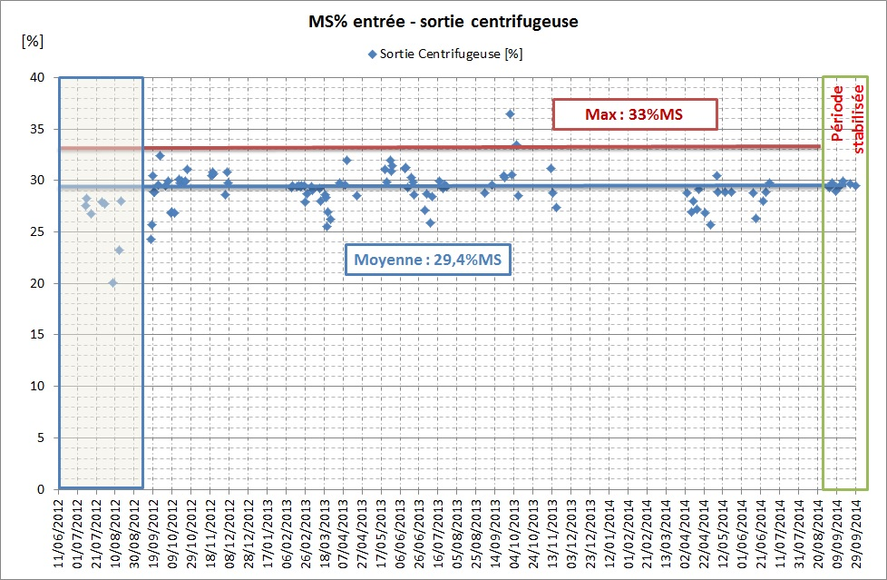
Lors de la phase stabilisée représentative d'un fonctionnement normal de la configuration DLD qui sera utilisé pour le bilan, la siccité moyenne de la boue sortie centrifugeuse est de 29,4 %. Cette valeur, suivie par la figure 3.35, varie peu.
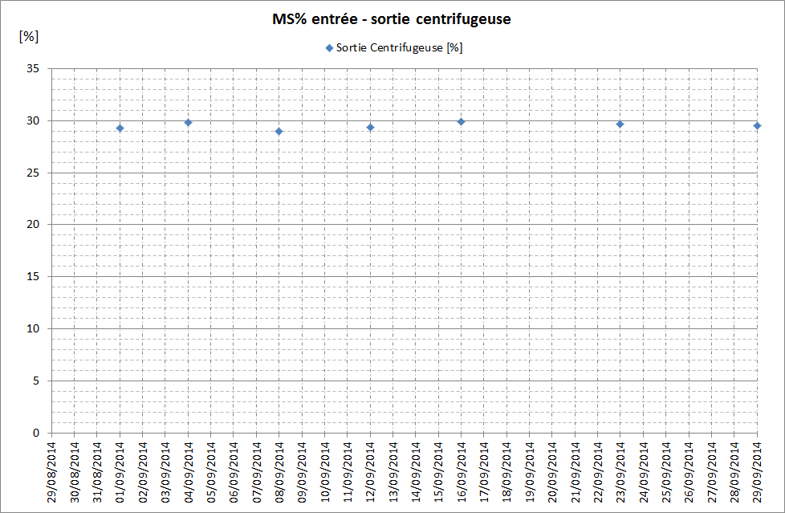
Paramètres du Digesteur 2 :
Situé en bout de chaîne de la configuration DLD, le digesteur 2 est complètement dépendant du bon fonctionnement des ateliers situés en amont. Ainsi, pour assurer une stabilité et des résultats optimaux au niveau du digesteur 2, il faut :
- Que le stockeur de boue 1 fonctionne et brasse correctement les boues,
- Que le digesteur 1 soit correctement alimenté et réchauffé avec un brassage suffisant pour assurer les performances de méthanisation attendues,
- Que le stockeur 2 fonctionne correctement,
- Que l'atelier de déshydratation fonctionne correctement,
- Que la trémie d'alimentation du procédé soit maintenue à un certain niveau afin d'assurer un débit d'alimentation constant,
- Que la dilution à l'eau industrielle en aval du réacteur soit maîtrisée afin de ne pas rentrer trop concentrée dans le digesteur.
Le suivi des matières sèches entrée – sortie du second digesteur est important car, la siccité d'entrée est maîtrisée mais l'abattement du second étage de digestion est un point qu'il faut établir pour déterminer la performance globale de la configuration DLD. La figure 3.36 expose le suivi de ces siccités amont aval digestion.
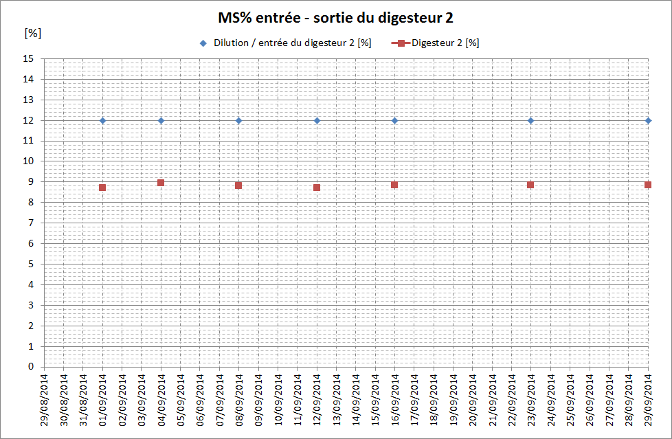
Sur la période stabilisée, la boue entre à 12 % et sort à 8,8 % de MS soit un abattement de la matière sèche de 26,5 %. Ainsi, l'abattement global des matières sèches de l'unité est de l'ordre de 55 % ce qui est à comparer avec un abattement de l'ordre de 45 % qui se retrouve dans une configuration LD classique. La configuration DLD permet donc de réduire le volume de boue de 22 % de plus qu'une configuration LD avant déshydratation finale. Cet abattement est corroboré par les performances mesurées sur les matières volatiles. La figure 3.37 indique le suivi des MV de la boue. Celle-ci entre à 55 % de MV, ce qui est une valeur classique en sortie d'une digestion simple et ce qui est obtenu après le premier digesteur, mais elle ressort du second digesteur à 51 % de MV.
Ainsi, sachant que le débit journalier moyen d'alimentation en boue du second digesteur sur la période considérée est de 3 909 [l/jour], l'abattement des MV du second étage de digestion est déterminé par la relation (3.2) suivante :
(3.2)
1 − (MSout × MVout) / (MSin × MVin)
= 1 − (3 909 [l/jour] × 8,8 [% de MS] × 51 [% de MV]) / (3 909 [l/jour] × 12 [% de MS] × 55 [% de MV])
= 31,4 [%]
Cet abattement de MV du second étage de digestion de 31,4 % vient s'ajouter aux 55 % d'abattement du premier digesteur.
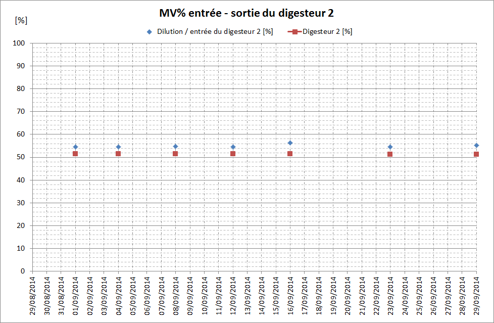
Calculé par l'expression (3.3), l'abattement global des MV est de l'ordre de 68,7 %. Ainsi, 68,7 % de MV issues de l'abattement des 55 % de MS sont convertis en biogaz.
(3.3)
1 − (1 − % réduction des MV du digesteur 1) × (1 − % réduction des MV du digesteur 2)
= 1 − (1 − 55 [%]) × (1 − 31,4 [%])
= 68,7 [%]
La DCO soluble en entrée du digesteur 2 est majoritairement due à l'action de l'hydrolyse thermique qui solubilise une fraction de la pollution particulaire. La figure 3.38 retrace le suivi de cette DCO soluble. La DCO soluble entrée du digesteur 2 est en moyenne de 28,2 g/l alors qu'en sortie du digesteur 1, la concentration moyenne est de 0,9 g/l. L'hydrolyse thermique a donc solubilisé 28 % de la DCO particulaire. En sortie du digesteur 2, la concentration de la DCO soluble restante est de 12,2 g/l. Ainsi, la moitié de la matière rendue soluble est consommée.
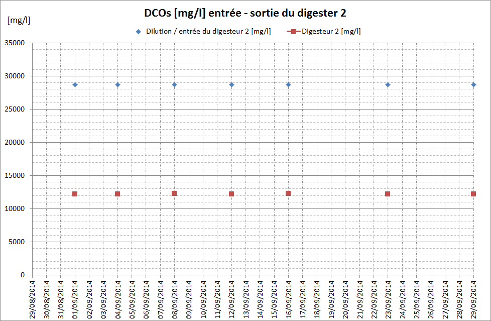
Cette DCO soluble restante n'est pas assimilée par la culture microbienne en condition anaérobie même après un temps de séjour de 13 jours dans le digesteur. Ces composés difficilement biodégradables issus de réactions de type Maillard entre les sucres et les acides aminés sont des composés non assimilés qui représentent une charge polluante qui ne peut que très difficilement être traitée par la file de traitement d'eau. Du fait de cette difficulté de traitement, ces composés sont dits durs.
Le suivi de la DCO totale de la figure 3.39 indique que l'on passe d'une concentration de 102 à 95 g/l. Soit un abattement de 6,8 %. Le faible abattement dans le second étage de digestion est probablement dû au fait que l'on arrive sur une charge polluante ultime et que la configuration DLD permet d'arriver aux limites de dégradation de la boue.
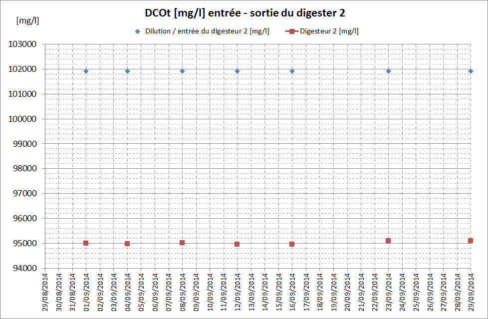
La composition du biogaz :
Des appareils analytiques permettent de suivre la composition du biogaz sur les deux lignes. Généralement, sur les stations d'épuration municipales, la quantité moyenne de CH₄ dans le biogaz produit se situe entre 60 et 65 %. Le taux de CH₄ dépend de la nature des MV dégradés, par exemple la dégradation d'un kilogramme de lipide produira plus de CH₄ qu'un kilogramme de glucide par leur ratio DCO/MV, mais surtout du taux de solubilisation du CO₂ dans la phase liquide. Plus le pH de la boue augmente, plus le CO₂ produit par la dégradation anaérobie se retrouve sous forme HCO₃⁻ et est donc gardé en solution. C'est pourquoi il est attendu qu'un digesteur situé après une hydrolyse thermique fonctionne à un pH plus élevé qu'un digesteur classique et présente un biogaz plus riche en CH₄.
Une diminution rapide du pourcentage de CH₄ indique un problème de l'activité (inhibition) de la biomasse méthanogène. En cas d'inhibition, le CH₄ diminue indiquant un blocage de la méthanogénèse. Comme les réactions d'acidification et d'acidogénèse continuent, la production d'AGV continue mais ces AGV ne sont pas dégradés dans le système par les méthanogènes ce qui acidifie le milieu et provoque in fine une chute de pH.
Le digesteur a un fort pouvoir tampon. Ce faisant, tout impact d'une chute de pH n'est visible que bien après le début de la diminution du pourcentage de CH₄ dans le biogaz. C'est pourquoi, afin de contrôler la bonne santé de la digestion, une mesure en ligne de la qualité en CH₄ est faite car c'est le seul indicateur immédiat, avec la mesure du débit de biogaz, d'une perturbation du système.
Le graphique 3.40 est le résultat du suivi de la qualité du biogaz produit sur chacun des digesteurs. Sur la période, le pH moyen du digesteur 1 est de 7,3 et celui du digesteur 2 est de 7,5. Le pH du second digesteur est, à 2 % près, identique à celui du premier digesteur.
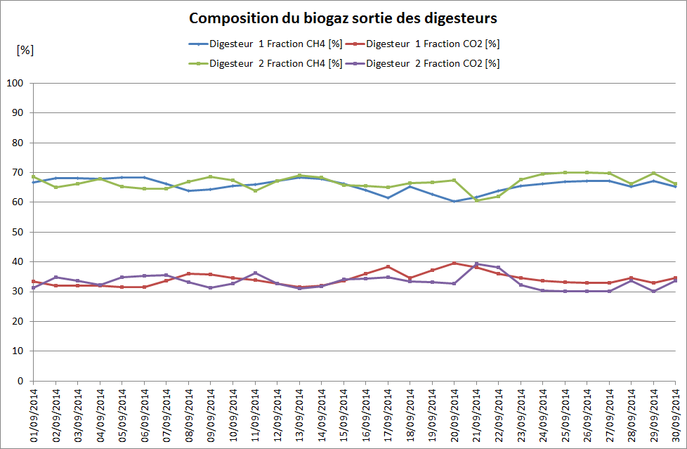
Le pourcentage de CH₄ dans le premier digesteur est en moyenne de 65,8 % de CH₄. Dans le second digesteur, ce taux moyen passe à 66,7 %. Au niveau du second digesteur, le pH n'est pas significativement plus élevé que dans le premier digesteur et la qualité du biogaz est similaire dans les deux étages de digestion.
Concentration en ammoniac des digesteurs :
La teneur en azote dans les boues à traiter est un paramètre à connaître. L'hydrolyse thermique solubilise très fortement l'azote, majoritairement sous forme d'azote organique et plus minoritairement sous forme d'azote ammoniacal N-NH₄⁺. Bien que ce soit le NH₃ qui soit le facteur inhibant la méthanisation, c'est l'azote ammoniacal qui est utilisé comme traceur en raison de la simplicité de son suivi analytique.
Des phénomènes d'inhibition de la digestion anaérobie par la forme NH₃ (aqueux) sont évoqués dans la littérature. Une valeur de l'ordre de 130 à 150 mg/l de NH₃ est communément admise comme étant la concentration limite à ne pas dépasser pour ne pas bloquer la phase méthanogène.
Le calcul de l'équilibre de l'azote ammoniacal et de l'équilibre calco-carbonique du digesteur permet de calculer une concentration en N-NH₄ équivalente de 2,5 à 3 g/l.
Le second digesteur travaille à une concentration de 120 g/l de matière en suspension au lieu des 50 g/l classique ce qui induit que sa concentration en azote ammoniacal peut être particulièrement importante. C'est pour pallier à ce phénomène qu'une dilution des boues hydrolysées à l'eau industrielle en entrée de digestion est réalisée afin de maintenir la concentration de N-NH₄ sous les 2,5 g/l.
La figure 3.41 reprend les analyses du suivi de la concentration d'azote ammoniacal dans les digesteurs. Sur la période stabilisée, la concentration de N-NH₄ dans le premier digesteur est de 1 189 mg/l ce qui correspond aux valeurs classiques attendues et équivaut à un N-NH₃ de l'ordre de 50 mg/l. La concentration de N-NH₄ du second digesteur est logiquement plus élevée du fait de l'augmentation de concentration mais, avec une concentration de 1 956 mg/l, reste sous les 2 500 mg/l, soit un équivalent de l'ordre de 100 mg/l de N-NH₃. À ces valeurs, la réaction de méthanogénèse n'est pas bloquée.
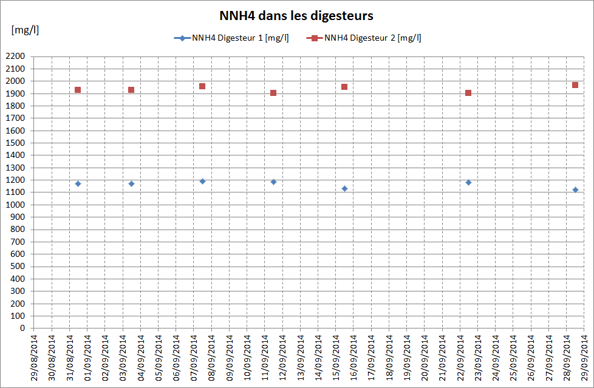
Ainsi, il serait possible d'augmenter la concentration en entrée digesteur 2 et d'augmenter cette concentration initialement imposée à 120 g/l de MES afin de réduire davantage la taille du digesteur. En effet, à charge polluante constante, toute augmentation de la concentration dans le digesteur permet soit d'augmenter le temps de séjour de la boue dans le digesteur à volume de digestion constant, soit de diminuer le volume d'un digesteur à temps de séjour équivalent. Le NH₃ n'est pas le seul facteur inhibant la production de biogaz. La matrice boue est vivante, complexe et peut être impactée par des concentrations de molécules pouvant être inhibitrices sur les micro-organismes de la digestion anaérobie. Parmi ces substances, on peut citer les éléments suivants qui sont plus ou moins inhibiteurs selon leur concentration : le Sodium, le Potassium, le Calcium, le Magnésium, le N-ammoniacal, le Sulfure (dont le sulfure d'hydrogène), le Cuivre, le Chrome (VI), le Chrome (III), le Nickel et le Zinc. Il existe également des inhibiteurs organiques de type phénols.
Alcalinité des digesteurs :
L'alcalinité est une mesure du pouvoir tampon du milieu. Exprimée en mg/l de CaCO₃, elle est due aux carbonates et aux bicarbonates de calcium, et dans une moindre mesure, aux acides gras volatils qui impactent le pH. L'alcalinité des digesteurs doit se situer au-delà des 1 g/l pour que les carbonates jouent le rôle de tampon du milieu, stabilisent le pH et contribuent à l'équilibre des diverses formes des gaz carbonées dissous. Un effluent chargé en azote organique va produire dans le digesteur de l'azote ammoniacal, qui contribuera à générer de l'alcalinité et permettra ainsi un fonctionnement plus stable du digesteur. C'est pourquoi un suivi de l'alcalinité des digesteurs est réalisé afin de contrôler sa stabilité. Comme il est visible sur la figure 3.42, le digesteur 1 a un régime bien établi avec une concentration moyenne de 4 707 mg/l de CaCO₃.
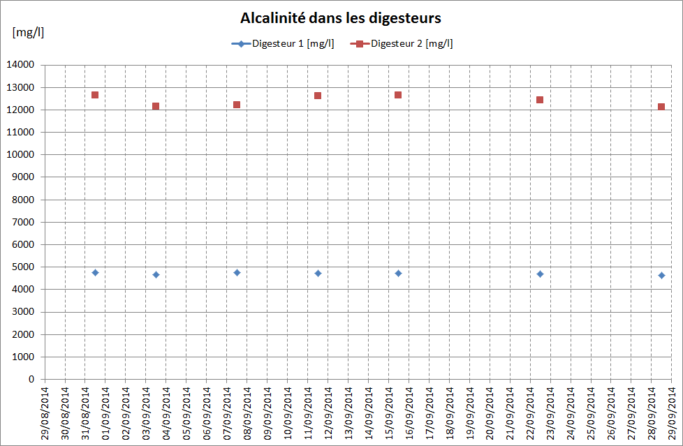
Cette concentration est en phase avec la plage de valeurs admise par la littérature allant de 2 000 à 5 000 mg/l. Au sein du second digesteur, l'alcalinité moyenne est de 12 048 mg/l de CaCO₃. Cette valeur haute, stable sur la période, s'explique par l'augmentation de la concentration des MS en entrée du second digesteur. Elle est cohérente par rapport à la valeur du premier digesteur car, étant deux fois plus concentrée en MS, il est logique que la concentration en CaCO₃ le soit aussi.
Acides Gras Volatils :
Le suivi des AGV prit indépendamment n'a qu'une valeur indicative du stock d'AGV présent dans les digesteurs. Il convient de s'assurer que la concentration n'augmente pas brusquement. Il convient d'utiliser le ratio AGV/TAC comme indicateur de la bonne activité biologique/bactériologique du digesteur.
La figure 3.43 permet de nouveau de constater la stabilité du fonctionnement des digesteurs.
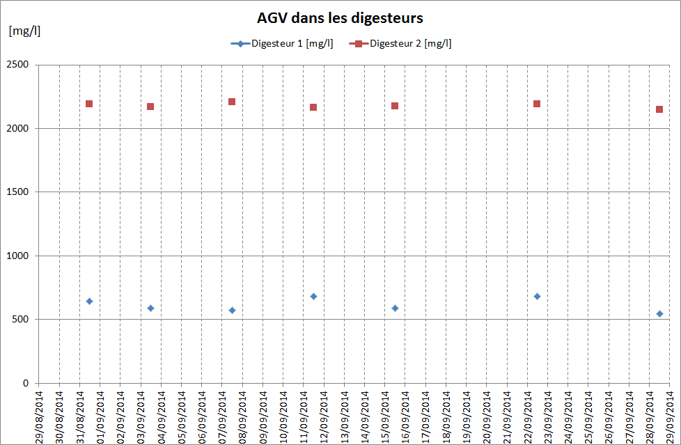
Il est indiqué dans la littérature que le rapport AGV/TAC doit se situer entre 0,2 et 0,5. Au-delà de 0,5 la production d'AGV est importante ce qui implique un apport de matière fermentescible trop important. En deçà, la production d'AGV est un peu trop basse signifiant un manque de biomasse à l'entrée du digesteur.
Sur la période étudiée, la moyenne de la concentration des AGV du digesteur 1 est de 615 mg/l soit un ratio AGV/TAC de 615/4 707 = 0,13. Par l'effet de l'hydrolyse thermique, le taux d'AGV est plus élevé dans le digesteur 2 tout en restant stable. Comme vu précédemment, le TAC dans ce digesteur a lui-même fortement augmenté si bien que le rapport AGV/TAC est de 2 178/12 048 = 0,17. Au niveau du digesteur 1, un ratio sous les 0,2 peut s'expliquer par les bonnes performances d'abattement de la matière organique tout en restant proche de la limite basse des 0,2 généralement recommandée. Au niveau du second digesteur, bien qu'on libère de la matière en la solubilisant par l'hydrolyse, le ratio reste proche mais toujours légèrement sous les 0,2. Ceci s'explique aussi par les performances du digesteur 1 qui se répercutent sur le second étage de digesteur.
Bilan massique de la configuration DLD :
Tous les indicateurs de suivi des digesteurs confirment que leur fonctionnement est stable sur la période considérée. Il est donc possible d'établir un bilan massique afin de croiser les données analysées, à savoir les diverses concentrations, avec les données mesurées, à savoir les débits boue et gaz. L'objectif final de ce bilan est de vérifier la cohérence entre les paramètres analysés, ceux mesurés et la production de biogaz calculée et mesurée. L'ensemble permettra de valider la performance globale du procédé et de la configuration DLD.
Le bilan massique de la figure 3.44 reprend les éléments analysés et ceux mesurés pour chacune des étapes de la configuration DLD. Au niveau du premier digesteur, sur la période du bilan, l'alimentation moyenne journalière du digesteur est de 13 090 [l/jour]. La siccité moyenne entrée est de 6,1 %. Ainsi, la charge en matière sèche est de 13 090 [l/j] × 0,061 [%] = 794 [kg/jour] de MS. Le taux de matière volatile présente dans la matière sèche est de 74,99 %. La charge en MV est donc 795 [kg/jour de MS] × 0,75 [%] = 594 [kg MV/jour]. Les matières minérales correspondent à la différence entre les MS et les MV. La charge en MM est de 198 [kg/jour]. La concentration en DCO soluble moyenne entrée digesteur est de 8 673 [mg/l] soit une charge polluante de 13 090 [l/jour] × 8 673 [mg/l] = 113,5 [kg/jour]. Sur le même principe, la charge de DCO totale est de 72 066 [mg/l] × 13 090 [l/jour] = 943 [kg/jour].
Suivant le même principe, en sortie du digesteur 1, la concentration en DCO soluble est de 881 [mg/l] donne une charge de 12 [kg/j], la concentration en DCO totale de 32 058 [mg/l] donne une charge de 420 [kg/l], la siccité de 3,8 % donne une charge de 494 [kg/j] et le taux de MV de 55 % donne une charge de 272 [kg/j].
La production de biogaz estimée est calculée par la différence de charge en MV entrée sortie multipliée par le coefficient de 0,9 Nm³ de biogaz par kg de MV consommée. Le biogaz attendu est donc de l'ordre de (596 − 272) × 0,9 = 291,5 [Nm³/j]. La production journalière de biogaz mesurée par des débitmètres massiques est de 295,8 [Nm³/j].
Les écarts entre les débits biogaz mesurés et calculés sur base des analyses sont faibles. Le ratio calculé de la production de biogaz produit par kilogramme de MV abattue est de 0,913 ce qui est cohérent au ratio de 0,9 déterminé par la formule de Buswell dans le chapitre 1. On arrive à un ratio expérimental de 0,91 [Nm³/kg] de MV pour le digesteur 1 et 0,95 pour le digesteur 2. La production de biogaz a donc été proche de la stœchiométrie calculée.
L'écart entre cette production calculée et mesurée sur le digesteur 1 n'étant que de 1,4 %, son bilan est cohérent et corrobore les données mesurées et celles calculées. L'abattement des MV de 54,5 %, l'abattement des MS de 37,8 % et l'abattement de la DCO totale de 55,5 % sont fiables. À noter qu'en sortie de digesteur, la charge en DCO soluble est faible avec seulement 12 [kg/j].
Avant d'être hydrolysée, la boue chaude extraite du digesteur 1 passe par le stockeur 2 avant d'être déshydratée. Durant ce stockage la boue peut poursuivre son processus de dégradation ce qui implique de vérifier la teneur en MV. Ce taux de MV restant à 55 % cette activité biologique n'a pas impacté la boue. La siccité obtenue lors de la déshydratation des boues par une centrifugeuse permet de passer de 3,8 à 29,5 %. L'eau extraite, autrement dit les centrats, sont renvoyés en tête de la station d'épuration. Le débit de boue relevé à 29,5 % de siccité est de 1 589 [l/j]. Ainsi, on constate un léger écart de masse de l'ordre de 5 %. Cet écart s'explique par l'incertitude sur les mesures de siccité et de débit ainsi que par le taux de capture de la centrifugeuse de l'ordre de 96 % ce qui implique une perte de matière avec les centrats. En conservant les concentrations sortie digesteur et en tenant compte de cette perte de 5 %, on calcule une charge de MS entrante dans l'hydrolyse de 469 [kg/jour], une charge en MV de 258 [kg/jour], une charge en MM de 211 [kg/jour], une charge en DCO totale de 399 [kg/jour] et une charge en DCO soluble de 11 [kg/jour]. Ce sont ces charges qui sont traitées par le procédé d'hydrolyse thermique.
Après l'hydrolyse thermique, et après avoir dilué la boue pour ramener sa concentration à 120 [g/l] de MS, les analyses permettent de déterminer une charge en MV de 258 [kg/jour] qui reste inchangée. Par contre, dans cette MV, une part de la fraction particulaire s'est solubilisée. L'analyse des MV solubles sur les boues n'étant pas aisée, on utilise comme indicateur la DCO soluble. Cette DCO soluble passe de 11 à 112 [kg/jour] pour une DCO totale de 399 [kg/jour]. Ainsi, la solubilisation de la matière organique est de 112/399 = 28 %. C'est cette pollution solubilisée qui sera attaquée dans le second digesteur. Les charges en MS, MM et DCO totale sont vérifiées afin de s'assurer qu'elles sont inchangées ce qui est le cas.
En sortie du digesteur 2, la siccité est de 8,8 % et les MV de 51 %. Les charges associées sont de 177 [kg/jour] de MV, de 168 [kg/jour] de MM, de 345 [kg/jour] de MS, de 371 [kg/jour] de DCO totale et de 48 [kg/jour] de DCO soluble.
La production de biogaz estimée au niveau du second digesteur est de l'ordre de (258 − 177) × 0,9 = 73 [Nm³/j] alors que la production journalière de biogaz mesurée est de 77,1 [Nm³/j] ce qui représente un écart entre l'analyse et la mesure de 5,3 %. Le ratio calculé de production de biogaz en fonction de la masse de MV abattue est de 0,95 soit encore une valeur proche des 0,9 théorique issu de la stœchiométrie au CHONS et ratio DCO/MV considéré. Les différents abattements du second digesteur sont de 31,4 % pour les MV, 26,5 % pour les MS et de 6,8 % pour la DCO totale.
Sur l'ensemble de la configuration DLD, l'abattement global des MV est de l'ordre de 68 % ce qui est normalement bien meilleur qu'un digesteur simple dont l'abattement est de 45 % ou encore d'une configuration LD avec 55 %.
Les performances du premier étage de digestion ont été telles que l'abattement des MV obtenu en 12 jours était équivalent à celui d'un digesteur ayant un temps de séjour de 24 jours.
Ainsi, l'augmentation de la production de biogaz due à l'hydrolyse thermique a été considérée comme celle mesurée au niveau du second digesteur. Le gain calculé en biogaz est de 77/291,5 = 25 % (26 % sur base des débits biogaz mesurés).
L'avantage de la configuration DLD est qu'elle permet, après un premier étage de digestion, de déshydrater les boues biologiques à plus de 20 % de siccité ce qui est compliqué à obtenir sans étape préalable de digestion compte tenu de la nature même des boues biologiques. Ce gain de siccité permet, ayant moins d'eau à chauffer, de faire baisser la consommation vapeur par tonne de MS traitée. Les boues arrivant plus concentrées, cette configuration permet de réduire la taille du réacteur. Elle permet d'atteindre un abattement des MV de 68 % ce qui induit une réduction du volume des boues accrue et une augmentation de la production de biogaz de l'ordre de 26 %.
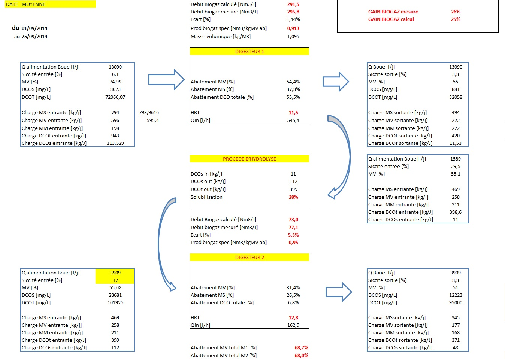
3.4 Conclusion
Le suivi des températures a montré que l'utilisation d'une canne d'injection vapeur ne permet pas d'assurer la bonne condensation de la vapeur dans la boue. En remplacement de ce système, l'utilisation d'un mélangeur dynamique pour injecter et mélanger la vapeur avec la boue a été testé et a donné satisfaction. Avec ce mélangeur dynamique, il apparaît que les températures au sein du condenseur s'homogénéisent dès la sortie du mélangeur et restent homogènes le long du réacteur.
L'emploi d'un tel dispositif pour injecter la vapeur permet de ne plus se soucier de questions liées à l'homothétie du design d'un injecteur simple et de l'homogénéité des températures et surtout de la siccité des boues entrantes ce qui est le point limitant de ces technologies. Il permet aussi de limiter les gradients thermiques au sein du réacteur ce qui impacte positivement les contraintes mécaniques et limite ses déformations dues à la dilatation du réacteur.
Le suivi des performances de l'installation pilote a permis de valider l'intérêt d'une configuration DLD en termes d'abattement de la matière organique et de production de biogaz mais aussi de confirmer le bon fonctionnement et l'efficacité de la solubilisation de la DCO sur le long terme de l'hydrolyse en continu. Cette solubilisation est en moyenne de 28 %. La configuration DLD permet un rendement d'abattement de la matière organique de 68 %, ce qui représente une avancée par rapport à la configuration LD classique dont l'abattement maximum se situe autour de 58 %, elle permet d'augmenter la production de biogaz de plus de 25 % et de réduire d'autant la quantité de matière sèche qui sera évacuée.